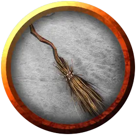

Оживлённая метла
Animated Broom
Маленький Конструкт

Класс Доспеха 15 (природный доспех)
Хиты 17 (5к6)
Скорость 0 футов, летая 50 футов (парит)
| мод | спас | ||
|---|---|---|---|
| СИЛ | 10 | +0 | +0 |
| ЛОВ | 17 | +3 | +3 |
| ТЕЛ | 10 | +0 | +0 |
| мод | спас | ||
|---|---|---|---|
| ИНТ | 1 | −5 | −5 |
| МДР | 5 | −3 | −3 |
| ХАР | 1 | −5 | −5 |
Иммунитет к урону психическая энергия, яд
Иммунитет к состояниям окаменение, ослепление, отравление, сбивание с ног, паралич, очарование, глухота, испуг, истощение
Чувства слепое зрение 120 футов (слеп за его пределами), пассивное Восприятие 7
Опасность 1/4 (50 опыта)
Бонус мастерства +2
Особенности
Обманчивый объект. Если метла неподвижна в начале боя, она получает преимущество на бросок инициативы. Более того, если существо не заметило её движений или действий, это существо должно преуспеть в проверке Сл 15 Мудрости (Восприятие) для определения того, что метла является оживлённой.
Облёт. Метла не провоцирует атаки, когда вылетает из досягаемости врага.
Действия
Мультиатака. Метла совершает две рукопашные атаки.
Древко. Рукопашная атака оружием: +5 к попаданию, досягаемость 5 фт., одна цель. Попадание: 5 (1к4 + 3) дробящего урона.
Описание
Если не трогать метлу, она выполняет свои обязанности: подметает пол. Если же существо пытается её схватить или представляет ей угрозу, она атакует.